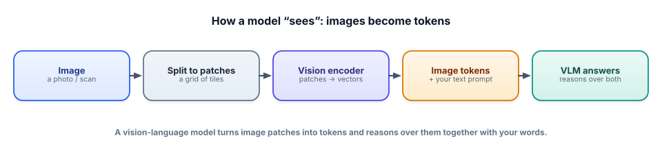

Beyond text: vision-language models
Everything so far has been words in, words out. But a huge amount of the world’s information is visual — screenshots, receipts, charts, product photos, scanned forms. Vision-language models let a system see, and that unlocks a whole class of products.
What a vision-language model is
A vision-language model (VLM, or “multimodal LLM”) is an LLM that accepts images alongside text and reasons about both together. You can hand it a photo and ask “what’s in this picture?”, give it a screenshot and ask “what does this error mean?”, or show it a chart and ask “what was the trend in Q3?”. It’s the same next-token machine from Track 1, extended so that images can enter the prompt as tokens.
How does an image become tokens? The model splits the image into a grid of small patches, and a vision encoder turns each patch into a vector — the same “meaning as vectors” idea as text embeddings (Track 1), but for pixels. Those vectors become image tokens that sit in the context window right next to your text tokens, so the model attends over words and image regions jointly. That’s the whole trick: once an image is tokens, the LLM machinery you already understand handles the rest.

What it looks like (free and local)
You don’t need a paid API to try this: open VLMs like LLaVA run locally through Ollama, so the whole thing stays $0. The call looks almost exactly like a normal chat, with an image attached:
import ollama
reply = ollama.chat(
model="llava", # an open vision-language model
messages=[{
"role": "user",
"content": "What is happening in this image? List the objects you see.",
"images": ["receipt.jpg"], # the image goes right in the message
}],
)
print(reply["message"]["content"])The interface barely changed — an images field — but the capability jumped enormously. Common uses: describing images, visual question answering (“how many people are in this photo?”), reading text in an image, understanding charts and diagrams, and extracting structured data from documents (the next lesson).
Where VLMs break
VLMs are impressive and unreliable in specific, predictable ways — and naming these is a senior signal. They’re weak at precise spatial reasoning (exact positions, “is A to the left of B”), counting many objects, and reading small or dense text reliably. And they hallucinate visually just like text models hallucinate facts — confidently describing an object that isn’t there, especially if your question presupposes it (“what breed is the dog?” when there’s no dog).
The mitigations are familiar: ask neutral questions, don’t presuppose, verify critical extractions, and for exact text use OCR as a check. Treat a VLM’s reading of an image the way you treat any model output — useful, fluent, and to be verified when it matters.
- A vision-language model (VLM) takes images + text and reasons over both — an LLM extended to see.
- Images become tokens: split into patches → vision encoder → vectors → image tokens in the context window.
- Uses: description, visual Q&A, reading text, chart/diagram understanding, document extraction.
- Free/local is possible — open VLMs like LLaVA via Ollama; the API just adds an
imagesfield. - Weaknesses: precise spatial reasoning, counting, small text, and visual hallucination — verify when it matters.
You’re building a feature where users upload a photo of a whiteboard and ask questions about it. Name two things a VLM will handle well, one thing it may get wrong, and how you’d reduce the risk of that failure.
▸ Show solution & reasoning
Handles well: summarizing the general content (“this is a system-design sketch with three boxes and arrows”), and answering high-level questions about legible text or obvious structure. May get wrong: reading messy handwriting precisely, transcribing dense or small text accurately, or exact spatial claims (“the arrow goes from the second box to the fourth”) — and it may confidently invent a label that isn’t there.
Reducing the risk: for anything that depends on exact text, run OCR as a second, verifiable source and cross-check; ask non-leading questions (“what text can you read?” rather than “what’s the deadline written here?”, which invites a confident guess); and, for consequential extractions, show the user what the model read and let them confirm. The general rule from the whole course applies: match the amount of trust you place in the output to the cost of it being wrong, and verify the pieces that matter.
How does an image get into a vision-language model so it can be reasoned about with text?
The reason multimodal matters commercially is that an enormous share of real business information was never text you could query — it lived in images and documents: receipts and invoices, ID cards, insurance forms, medical scans, product photos, screenshots in support tickets, slides, engineering diagrams, shelf photos in retail. For decades, using that information meant either manual data entry or brittle, narrow computer-vision pipelines that took months to build per use case. A capable VLM collapses much of that into a prompt: “read this form and return the fields as JSON,” “is this product damaged?”, “what does this screenshot show the user doing?” Whole workflows that required humans looking at pictures become automatable.
For you, this connects directly to everything else in the course rather than replacing it. A VLM is still an LLM, so prompting (Track 2), structured output (Track 2), grounding and hallucination management (Tracks 1, 3, 7), evaluation (Track 6), and serving cost (Track 8 — images are token-hungry and pricier) all carry over unchanged. The new skill is knowing when a problem is actually a vision problem, choosing between a VLM and a specialized tool like OCR, and combining them. That’s the theme of this track: not a new field, but your existing toolkit pointed at images, documents, and audio — which is exactly how the highest-value multimodal products get built.
The single most valuable business application of vision is turning documents into data. Next: document AI & OCR.